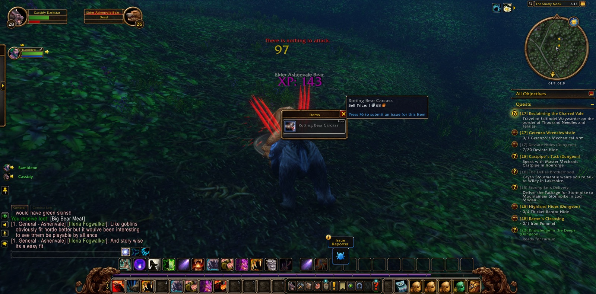
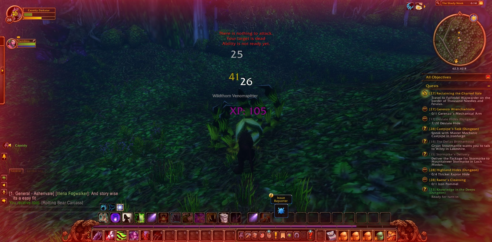
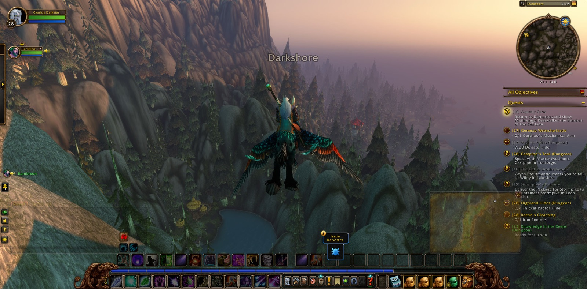
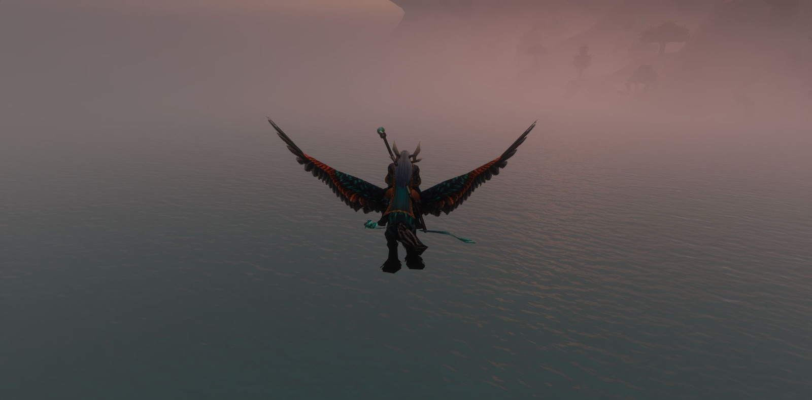

Cassidy Darkstar set out from the Tower of Althalaxx in Darkshore. For a brief while he stood beside Nerved, a paladin, and Sethra, a warlock, before each of them went their own way. Then he took the long road south, past Auberdine and the Twilight Shore, through the Zoram Strand of Ashenvale and up into the Stonetalon Mountains, until he came down by Mirkfallon Lake into the Charred Vale.


The work there was hard. He went against the Bloodfury harpies, the ambushers and slayers and roguefeathers, for the errand called "Reclaiming the Charred Vale." Among the basilisks he gathered the eight Crystalized Scales sought in "Retrieval for Mauren." The Vale did not yield without cost, and once he fell there. But he came back to the task and saw it done, and for a short stretch Scoob, a warrior, fought at his side.


From Windshear Crag his errands bore him onward. He saw "Special Delivery for Gaxim" through, found the blueprints of the Super Reaper 6000, and was given a Sealed Envelope to carry to Sputtervalve in the Barrens. He went by Honor's Stand and the Gold Road, with Coked the warrior beside him a little way, and so came to Ratchet. There he took up new labours. He gathered the raptor horns and brought them back. For "Smart Drinks" he went down into the Wailing Caverns and the Cavern of Mists, where Hilde the hunter joined him and the six Wailing Essences were won. The errand of the envelope ended where it had begun, at Windshear Crag, and a new name, Gerenzo Wrenchwhistle, was set before him.


Then his road ran wide indeed, through the Wetlands and Dun Morogh, the Searing Gorge and the Burning Steppes, Elwynn Forest and the Valley of Heroes, and out into Westfall. In Elwynn, Rambleon the hunter fell in beside him and kept with him far into Ashenvale. At last Cassidy came to Moonglade, and at the Shrine of Remulos he took up the Pendant of the Sea Lion. He bore it across the Veiled Sea to Mathrengyl Bearwalker in the Cenarion Enclave of Darnassus, and so the Aquatic Form was his.


He went back by Stonetalon Peak to lay down "Reclaiming the Charred Vale," and then passed again into Ashenvale. He met Quentyn and Eldrine only in passing, near the Dor'Danil Barrow Den. In the Warsong Labor Camp and the Warsong Lumber Camp he took orcish daggers and swords to slow the advance of the Horde, and at Satyrnaar he found the belongings of Kurothel. At Forest Song he was given "Shared Fury," and with Will the mage beside him he went into Xavian against its rogues, felsworn, hellcallers and betrayers. There he came into his twenty-ninth level, and a picture was taken to mark it.


Afterward he turned to "Raene's Cleansing," to Dartol's Rod and the hidden shrine. Step by patient step he went between the Moonwell, Astranaar and Mystral Lake. When that labour paused, he came at last to the Deepwater Tavern, with the errand of the rod still before him and the road running on.





